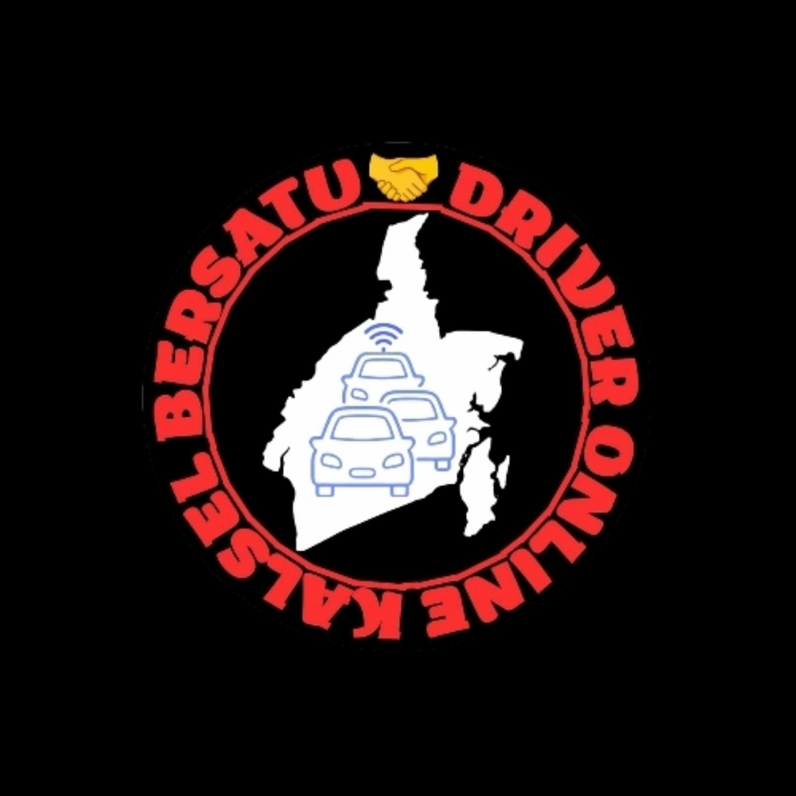

Organisasi resmi berbadan hukum yang menaungi driver online roda empat di wilayah Kalimantan Selatan.
Pengesahan Badan Hukum Perkumpulan.
NIB Aktif sebagai legalitas administratif organisasi.
Nomor 100.3.3.1/0991/KUM/2025
Tanggal 17 November 2025
Keanggotaan terbuka bagi driver online roda empat aktif yang beroperasi di wilayah Kalimantan Selatan dan bersedia mematuhi AD/ART serta ketentuan organisasi.
Perhitungan tarif mengikuti ketentuan resmi berdasarkan SK Gubernur Kalimantan Selatan Nomor 100.3.3.1/0991/KUM/2025 tanggal 17 November 2025.
Ketentuan:
Hasil perhitungan tarif di atas merupakan nilai bersih yang diterima oleh driver sesuai regulasi yang berlaku.